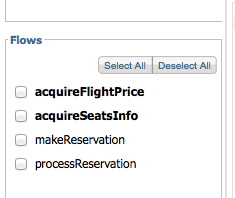
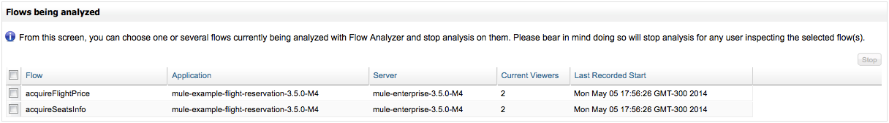

Analyzing Flow Processing and Message Payloads
The Flow Analyzer allows you to view and analyze real-time information about messages that a specific flow is processing. It displays message payloads before and after processing, information about the flow message processors and message metadata.
The Flow Analyzer does not modify message contents and does not create additional system load; it is safe to use in a production environment. However, the application that you analyze uses streaming, Flow Analyzer does not read the stream into memory to avoid causing problems in case of large messages.
To use the Flow Analyzer, follow the basic steps outlined below.
-
Go to the Flow Analyzer tab.
-
Select the Mule server from the drop-down menu on the left-hand pane. When you do so, the Applications section displays the applications available on that server.
-
Select the application. The Flows section will display the flows in the application.
-
Select the flow.
-
Click Start.
-
View message details as desired.
The following sections describe these steps as well as additional features in detail.
| Flow analysis is primarily a development tool and is not available for clusters. |
Flow Analyzer View
When you open the Flow Analyzer tab, it displays an empty screen as shown in the image below.
You operate the Flow Analyzer using the left-hand pane, and view the information displayed in the windows to the right.
Flow Analyzer View Features
The top section of the left-hand pane contains the controls and parameters for using the Flow Analyzer.
-
Start button: Start flow analysis. This button appears grayed-out until a flow is selected.
-
Freeze Msg List button: Replaces the Start button when analysis starts. Use it to disable automatic population of the message list as new messages come in. Click again to update the list with all new messages received.
-
Stop button: Stop flow analysis. This button appears grayed-out unless flow analysis is running.
-
Clear button: Clear message data. This button appears grayed-out unless message data from a flow analysis is being displayed.
-
Analysis Timeout: Sets a timeout in minutes for flow analysis. Flow analysis stops automatically after this time. This timeout avoids a flow analysis running indefinitely if the operator accidentally leaves it running. If you do not want a timeout for the flow analysis, select Unlimited from the drop-down menu.
MMC allows authorized users to stop an ongoing flow analysis, even if it was started by another user. See Stopping Flow Analyzer for details. -
Server drop-down menu: Select the Mule server where the application you wish to analyze resides.
-
Applications pane: When you select a server, this pane displays and allows you to select the applications available on the server.
-
Flows pane: When you select an application, this pane displays and allows you to select the flows in the application.
The image below shows the Flow Analyzer view with a selected server, application and two flows. Notice that the Start button is no longer grayed-out; you can start analyzing the selected flows in the application at any time.
As you can see, you can select more than one application and more than one flow. When you click start, you can identify which flow and application a message belongs to by checking the columns at the top of the message list.
Viewing Flow Analyzer Data
When you click the Start button to start analyzing a flow, the Analysis Timeout will start its countdown, unless you selected Unlimited from the Analysis Timeout drop-down menu. You can see the remaining time highlighted in green, as shown below.
The Flow Analyzer windows will remain empty as long as no flows are triggered. When a flow is triggered, the message list displays messages that pass through the selected flows, as shown below.
| Column name | Description |
|---|---|
Message Id |
The message ID |
Flow |
The flow that generated the message |
Application |
The application that generated the message |
Processing Time |
The amount of time that it took to process the message |
TimeStamp |
The exact time the message was generated |
To see information about a message, click the desired message in the message list. The Message Details section below the message list will display the list of message processors (identified by their names in the flow) that handled the message.
Click the name of a message processor to see its available information:
-
The Before Payload pane displays the contents of the message before processing by the message processor
-
The After Payload pane displays the contents of the message after processing by the message processor
-
The Message Properties pane displays the message properties
You can expand any of the information panes by clicking the icon at the top-right corner of each pane. For example, you can see an almost full-screen view of the Message Properties pane as shown below.
To go back to the original view, click the icon at the the top-right corner.
Logging Out of MMC with Flow Analyzer Running
You can log out of MMC while Flow Analyzer is running. Flow Analyzer continues to store message data for the selected applications and flows. When you log in again, you can see if Flow Analyzer is running by going to the Administration tab, then selecting Stop Flow Analysis from the left-hand menu. If Flow Analyzer is running, you will see relevant information – such as analyzed flow, application and server – and be able to select and stop any running analysis (see Stopping Flow Analyzer for details).
If you started Flow Analyzer yourself in a previous session, then logged back into MMC and want to see the data that Flow Analyzer has gathered while you were away, follow these steps:
-
Go to the Flow Analyzer tab.
-
Select the server where you know your flow analysis is running. If unsure, you can see a list of all running flow analyses by going to Administration → Stop Flow Analysis.
-
Select the application where you know your flow analysis is running. If unsure, you can see a list of all running flow analyses by going to Administration → Stop Flow Analysis.
-
When you select the application, any flows that are being analyzed will be displayed in bold, as shown below.
 -
The image above indicates that the first two flows are being analyzed. Click the flow whose data you wish to view, then click Start to start flow analysis. The Message List pane will be populated with all of the message information collected so far by the Flow Analyzer, including any new data gathered while you were logged out of MMC.
Stopping Flow Analyzer
As stated earlier, Flow Analysis will stop automatically when the specified timeout is reached. If the Unlimited option was set for flow analysis timeout, you have to stop flow analysis manually by clicking the Stop button on the left-hand pane.
If a user logs out of MMC while Flow Analyzer is running, flow analysis will continue in the user’s absence (see the section Logging Out of MMC with Flow Analyzer Running). The MMC administrative user can stop any running flow analyses, for any server or application. Additionally, a running flow analysis can be stopped by any user granted the Audit Flows - Admin Functions permission.
To stop a running flow analysis, follow these steps:
-
Go to the Administration tab.
-
In the left-hand menu, select Stop Flow Analysis. MMC displays a list of flows being analyzed, as shown below.
 -
Select the flow(s) that you want to stop analyzing, then click Stop in the top-right corner.
Granting User Permissions to Stop Flow Analyzer
If you want to enable an MMC user to stop Flow Analyzer, assign the Audit Flows - Admin Functions permission to the user group that the user belongs. Refer to Managing MMC Users and Roles for details on assigning permissions.
Viewing Message Payload When Using Streams
If the application that you analyze uses streaming, Flow Analyzer does not read the stream into memory to avoid causing problems in case of large messages. Instead of displaying the message, it displays basic information about the stream type.
However, if your application processes SOAP requests using streams for CXF connectors, you can see the details of a SOAP request with Flow Analyzer. To do so, you need to modify your application to sue an object-to-byte-array transformer so that it does not use a stream for CXF connectors. Doing so enables you to avoid the limitations imposed by streams and memory. An example configuration for an inbound endpoint is shown below; the same configuration also applies to outbound endpoints.
<object-to-byte-array name="ObjectToByteArray"/>
<cxf:inbound-endpoint address="....." transformer-refs="ObjectToByteArray" response-transformer-refs="ObjectToByteArray"/>See Also
-
Tracking Flows provides more information on using the Flows tab and setting up flow tracking, a prerequisite for flow analysis.
-
Analyzing Message Flows takes you through using the Flow Analyzer panes in detail.
-
Debugging Message Processing illustrates the general steps for debugging an application’s message processing.
-
Debugging the Loan Broker Example Application shows how to use the console Flow Analyzer screen to find an application logic bug.
-
Using Message Processors to Control Message Flow provides reference information for the available Mule message processors or routers.